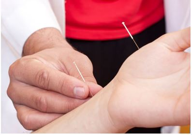
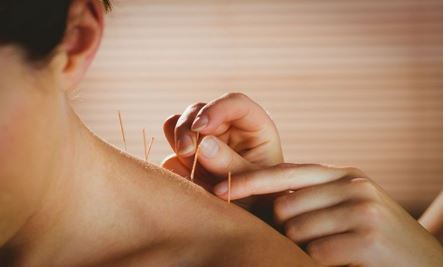

Acupuncture
Ancient Healing for Modern Health
Natural • Safe • Effective • Holistic Care
Acupuncture is a traditional healing therapy practiced for thousands of years. It uses very fine sterile needles placed at specific body points to improve circulation, stimulate healing, reduce pain, and restore balance.
Method of Treatment
Fine needles are gently inserted into selected acupuncture points to activate nerves, muscles, and tissues while improving physical and emotional wellness.
May Help With
- Back Pain & Joint Pain
- Neck & Shoulder Stiffness
- Migraines & Headaches
- Stress, Anxiety & Insomnia
- Sciatica & Nerve Pain
- Digestive Problems
- Hormonal Imbalance
- Fatigue & Low Energy
Benefits
- Relieves Pain Naturally
- Improves Blood Circulation
- Reduces Stress & Tension
- Promotes Better Sleep
- Boosts Energy & Immunity